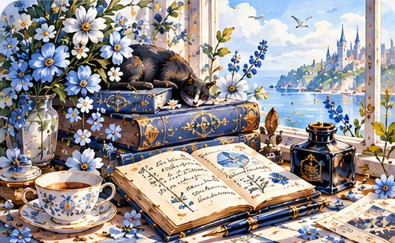
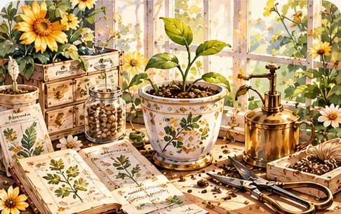
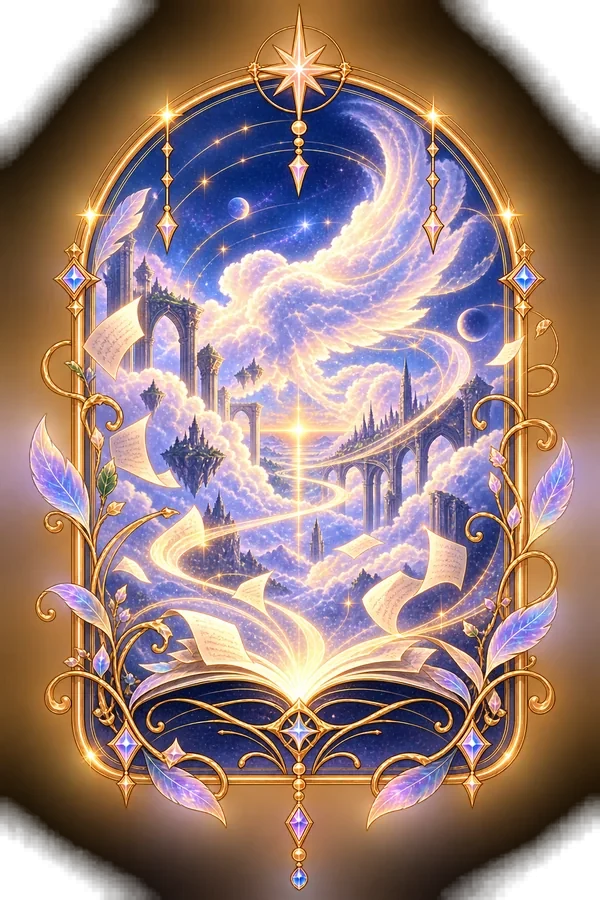
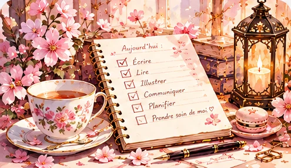
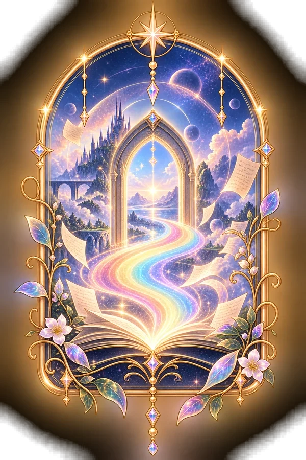
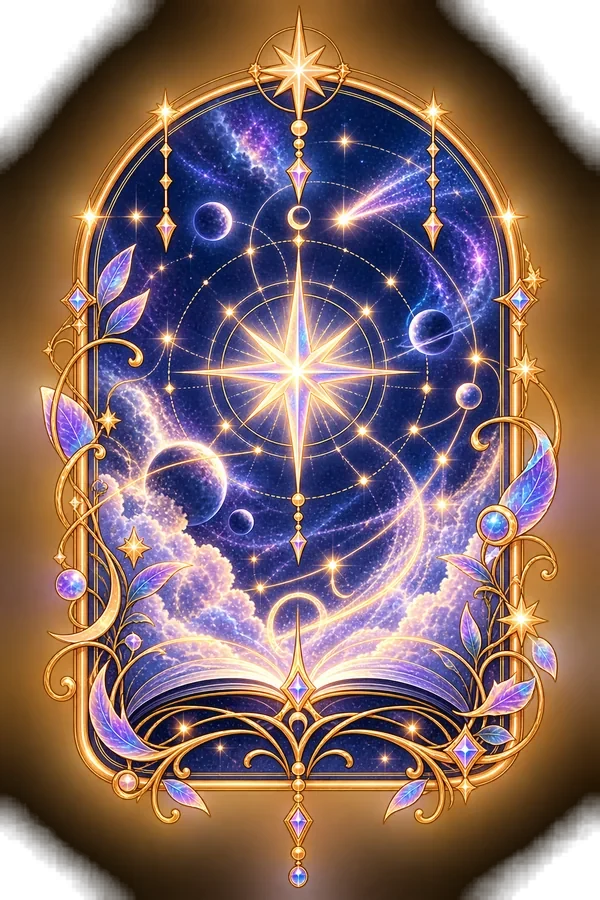

Sonate
Capture d'idée en plein vol
EntrerCordélia W. Noble
ÉCRIRE · EXPLORER · PARTAGER · FAIRE VIVRE
Des histoires pour habiter plusieurs mondes.

Capture d'idée en plein vol
Entrer
Idées en germination, notes, inspirations & futurs projets
Entrer
Pilotage des projets pour une horizon clair et un vaste ciel
Entrer
Parce que chaque tâches mérite son générique Netflix
Entrer
Pour que la vie d'auteur soit une symphonie sans anicroche
Entrer
Car chaque notes compte dans la symphonie du temps
Entrer